The manga pocket is in itself an object. It has the right thickness in relation to its size, the frames that fill the pages and is printed completely black and white. All these design choices are due to its function. As graphic designers we aspire to create beautiful things that have a purpose. Thus the manga book is very much similar to how we are taught to design at the academy. I have recently started watching early anime and manga; which were profoundly progressive for the time they were created. The stories and thematics are closely related to contemporary conflicts and concerns. The format doesn’t position itself as merely entertainment, it also functions as a critical mirror on our society. My personal definition of critical design is: communication through a visual language, that opposes questions, discourse and friction, in either identifiable, speculative or ominous setting. Therefore I am convinced that manga and anime have a cultural, sociological background that functions similar to critical design. For example the transition from reality to a fictional narrative is made visible throughout Akira and has developed into a critical piece of reflective escapism. In the meantime it also functions on a educational field, where history is retold to prevent the future to repeat past mistakes. Another example are fairytales, they function to develop identity in a playful way. The parental figure is the propagator of fairytales and point of reference for children. Eventually this will shift to new points reference, such as friends. When there isn’t any parental figure or socialisation, it is more likely to find points of reference that doesn’t require human intervention. For instance video games, television and books. The point of reference shifts and mannerisms from this manga and anime source will be adapted into reality. However due to the lack of the parental figures and socialisation in Japan, it is more likely that Japanese youth is being influenced by fiction. These fiction influenced individuals are called ‘otaku’. It describes the person with a serious obsession for a certain subject. I think the otaku can oppose to us a critical view of our society, political structures and even ethical dilemmas. One can argue that these people are biased by their one-sided interest. But I’d like to think otherwise, since their frame of mind is based on perspectives from different angles. The contrast in narratives between different manga and anime ask for a flexible understanding of certain situations. The otaku has to be more considerate of his ideas due to the multiplicity of his perspectives. Hence making the otaku an impartial critical analyst. I consider manga and anime a form of critical design and therefore my research question is; How does the critical format of manga and anime reshape our perception?
It begins with the manga pocket book as an object, the novels are so sophisticated. It has the right thickness in relation to its size, the frames that fill the pages and is printed completely black and white. All these design choices are based on form follows function, a term established by modernist designers in the 20th century. As graphic designers we aspire to create beautiful things that have a purpose. Thus the manga book is very much similar to how we are taught to design at the academy.
The manga finds it’s origin from popular illustrated reading material, graphic novels. I will go through the two most relevant genres that made have set the base for manga as we know. The japanese names for these two different genres are ‘Kibyoshi’ and ‘Kusazoshi’, and were produced from the Edo period1. Period between 1603 and 1868 in the history of Japan, when Japanese society was under the rule of the Tokugawa shogunate and the country's 300 regional daimyo. The period was characterized by economic growth, strict social order, isolationist foreign policies, a stable population and popular enjoyment of arts and culture.1 till 19th century .The Kibyoshi is considered to be the first comic books in Japanese culture. The theme’s ranged from fashion, to gossip and politics onwards. The Kibyoshi is characterised by its yellow cover. In contrast to Kusazoshi that is classified by different colour covers: red, black, blue or yellow. In Kusazoshi, mythical creatures called Yokai (fig. 1)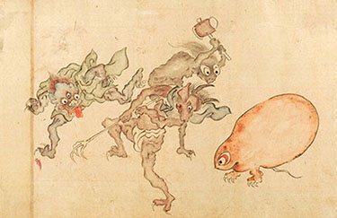, are often subjected to these stories. They tease and haunt humans, and although making the lives of humans miserable, the Yokai from the Kusazoshi are not scary but goofy.2. Koichi, Yumoto (2013) Yokai museum the art of Japanese supernatural beings from Yumoto Koichi collection. Tokyo Japan2 The stories range from long to short and could be printed in a few volumes which are bound in a book, this is called Gokan. The Kibyoshi’s popularity ended in the early 19th century, as for Kusazoshi this was until the Second World War.3. Kern, Adam L. (2006) Manga from the floating world Comic book culture and the Kibyoshi of Edo Japan. Cambridge MA3
A tradition of the graphic novel expanded to animations, termed anime. The earliest recording of Japanese animations is from 1907 and has eventually been used as propaganda in the Second World War. The first full length animation was released in 1945, Momotaro’s Devine Sea Warriors4. Directed by Mitsuyo Seo, who was ordered to make a propaganda film for World War II by the Japanese Naval Ministry. Shochiku Moving Picture Laboratory shot the 74-minute film in 1944 and screened it on April 12, 1945.4(fig. 2)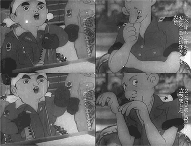, hence the war theme of the film. At that moment Japan’s animation industry soon caught up with Disney’s cell and multi plane techniques.
5. The multiplane camera is a special motion picture camera used in the traditional animation process that moves a number of pieces of artwork past the camera at various speeds and at various distances from one another. This creates a three-dimensional effect, although it is not actually stereoscopic.5
Manga relies on anime as the more popular format, and anime as we know wouldn’t be the format as we know without manga. Anime is an extension of manga, and are for that reason mentioned together.
Reading and watching all these stories set in different worlds, feels like an escape to a new place. I experienced these as different cultures, and I wanted to understand these the best as I could. I’ve been reading many reviews on different kinds of genres within the scope of manga and anime, various from shōnen6. Manga aimed at a young male audience. The age group varies with individual readers and different magazines, but it is primarily intended for boys between the ages of 8 to 18.6 –my personal favourite– to shōjo
7. Manga aimed at a teenage female readership.7. I wanted to know about the cultural background, strategy and tools used, so I could fully understand the story. The protagonist also plays a part in my quest to understanding. Similar to books, writers want to create characters that evoke emotion. Thus the internet is full of reactions and reviews about certain manga and anime; for example you can find discussions and rants on Reddit and on DeviantArt fan art together with fan fiction. The narratives of
manga and anime impress people and initiate movements that for a sense of community and belonging.
Though my fascination for this genre of graphic design, I’ve never fully committed to an active position in which I openly talked about it due to the prejudice surrounding it.
Most people have the preconception of manga and anime as being low-art, fairytales or animated porn. This vulgar image of this category of storytelling is revealed to be simplistic when you realise that the narrative and the visual work together. From this perspective, watching and reading has only become more complex. I challenged myself to watch some early anime, which is profoundly progressive for the time they were made in. The stories and thematics are closely related to contemporary conflicts and concerns. The format doesn’t position itself as merely entertainment, it also functions as a critical mirror on
our society.
Critical design has gradually become a tool and buzzword of designers to empower our discipline. There isn’t a fixed definition of critical design, and maybe that is also because of the subjectivity of design. My personal definition of critical design is: speculative design proposals that initiate discourse, raises questions and creates friction, through cultural and sociological identifiable themes. The idea of critical design is having a statement about what defines us as the human race; politics, religion, ethics etc. Manga and anime is constructed from a position of culture and sociology, that format pushes on the sore spots of our principles and actions. For this reasons I consider manga and anime critical design and is my research question; How does the critical format of manga and anime reshape
our perception?
Why are manga and anime reflective? John Dewey, American philosopher, psychologist, and educational reformer whose ideas have been influential in education and social reform. He established four criteria on what defines reflection. Firstly, reflection is a meaning-making process that moves a learner from one experience into the next with deeper understanding of its relationships with and connections to other experiences and ideas. It is the thread that makes continuity of learning possible, and ensures the progress of the individual and, ultimately, society. It is a means to essentially moral ends. Secondly, reflection is a systematic, rigorous, disciplined way of thinking, with its roots in scientific inquiry. Reflection needs to happen in community, in interaction with others.8. Dewey, John (1910) How we think. Boston (p.15, p. 169, p.181)8 Lastly reflection requires attitudes that value the personal and intellectual growth of oneself and of others. Manga and anime meets all the criteria of John Dewey’s definition of reflection. The narratives are used to restructure the ideas and principles one has by placing this in an unknown setting. The volumes or episodes are structured in a certain format according to time and location of the narrative. Finally for the makers, making a manga or anime allows them to develop their skill through experience. This leads to the development of more work which is distributed for the pleasure of society.
After the Second World War the thematics of narrative changed completely. The manga artist –called mangaka– emerged again after a period when the Kibyoshi and Kusazoshi weren’t plublished. Japan’s population experienced events that were a serious danger, the thematics of graphic before before became trivial. Although the new mangaka’s hasn’t experienced real combat as they were too young to have fought first hand, they also struggled with Japan’s national trauma.
The first shift within thematics has been is shown by extreme violence and war situated narratives. Out of this Mecha9. Refer to both scientific ideas and science fiction genres that centers on robots or machines controlled by people.9 – an abbreviation from the word mechanical–(fig. 3) 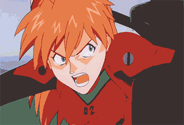 emerged around the early seventies. The idea is that instead of armies fighting, these would be replaced by a pilot that pilots large robots.10. Laging, Rik (2014) ROOD GEEL BLAUW. Haarlem1010. The Mecha serves as an upgraded version of traditional armors, with technologically advanced weaponry and types of transport. This super soldier would serve to fight smarter for a better world. The design of mecha is strongly influenced by the Japanese samurai (fig. 4)
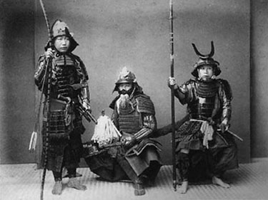 that has a history as being the ultimate soldier.11. Verberk, Bas J. M. (2013) The world of manga. Rotterdam (p.8-11)11However the thematic isn’t meant to promote war, in the contrary it disapprove warfare. The mangaka wants to design a tool that would find stability for the nation’s cultural insecurity.
One of the elements used over and over in many manga and anime refers to Nagasaki & Hiroshima12. The United States, with the consent of the United Kingdom as laid down in the Quebec Agreement, dropped nuclear weapons on the Japanese cities of Hiroshima and Nagasaki on August 6 and 9, 1945, respectively, during the final stage of the Second World War. The two bombings, which killed at least 129,000 people, remain the only use of nuclear weapons for warfare in history.12. The atomic bomb is one of many examples that defines Japanese disaster discourse. In a broader scope of what defines disaster discourse in Japan is discontinuity. For example Japan being the oppressor to being capitulator and the change of theocracy to democracy. A period of national idealism within the nation rose up in the 60’s as result of the disappointment of the Second World War.
13. Shapiro, Jerome (2002) Atomic Bomb Cinema The apocalyptic Imagination on film. New York<13 The people of Japan wanted to change the existing order to something optimal and perfect. This leftwing movement hasn't maintained, the Asama-Sansō incident in 1972 contributed to this greatly. The incident was a hostage crisis by five member of the Red Army and police siege in a mountain lodge below Mount Asama, Japan. The Red Army was a communist militant group founded by Fusako Shigenobu early in 1971 in Lebanon. The police rescue operation on the final day of the standoff was the first marathon live television broadcast in Japan, lasting 10 hours and 40 minutes. The age of idealism14. Japanese time period during the 1960’s where the population strived to create an new order based on the existing government.14 of Japan ended in 1970’s and was to that moment never reflected in any manga or anime. After the disappointment of the Asama-Sansō incident and the decline of trust within left-oriented organisations whom supported the Red Army. A age of fiction began and a new mindset developed, the population wasn't interested anymore in changing their systems as it has proven not to work. Instead they dreamt of new ones. Dislocated from our own worlds. In this period many yearned for a fresh start instead of building on what was already there.
Akira15. Cyberpunk/science-fiction manga released on December 6, 1982. On July 6, 1988 the anime adaptation was released.15 is a original story of Otōmo Katsuhiro, set in Neo-Tokyo 2019. The anime begins with a massive explosion in a big urban city, old Tokyo. In the narrative this is the end of the third world war that happened in 1988. First we have a fast overview on what Neo-Tokyo is, and then we get more in to the character development of the teenage characters, Kaneda and Tetsuo. Both are part of biker gang the Capsules(fig. 5)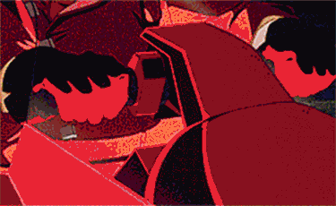. They’re racing a rivalling group and in the heat of the moment Tetsuo almost has an accident with a boy which has telekinetic powers. From this scene on the plot unravels. Tetsuo and Kaneda get deeper involved into a government secret called Akira. Tetsuo eventually succumb to the possession of strength, obtained through Akira. Neo-Tokyo struggles with resistance groups, religious fanatics, poverty and the source that caused the 1988 explosion has been awoken.
Akira makes use of historical and cultural imitations. This string of references in the text-modernist setting gives a sense that real and fictional is interwoven. The importance the text-modernistic narrative is that, it is created for a viewer that is unfamiliar with war or large catastrophe. “Akira is made by and for a generation of Japanese who have no personal memory of Nagasaki or Hiroshima.”.16. Freigburg, Freda (1996) “Akira and the Postnuclear Sublime” Hibakusha Cinema. New York (p.91-102)16 For this reason Akira’s structure is similar to the Japans post-war psyche. We can say that Japanese apocalypticism is defined by its discontinuity, which is applied throughout the narrative of Akira.17. Tanaka, Motoko (2014) Apocalypse in Contemporary Japanese Science Fiction New York (p. 190)1717. The disruption of time causes a feeling of uncertainty, which is the emotion I felt while watching Akira. This insecurity is caused by being positioned in the text-modernist location –familiar but also unknown– with little or no information given. The resistance movement in Akira refers to the Red Army, the protestors on the street point to the protests of the age of idealism, Lady Miyako is reminiscent of the rise of religious cults around the 90’s18. The Subway Sarin Incident, was an act of domestic terrorism perpetrated on March 20, 1995 in Tokyo, Japan, by members of the cult movement Aum Shinrikyo. In five coordinated attacks, the perpetrators released sarin on three lines of the present-day Tokyo Metro (then part of the Tokyo subway) during the rush hour, killing 12 people, severely injuring 50 and causing temporary vision problems for nearly 5,000 others. The attack was directed against trains passing through Kasumigaseki and Nagatachō, home to the Japanese government. Until the Myojo 56 building fire on September 1 2001, it was the deadliest incident to occur in Japan since the end of World War II.18 and the absence of parental figures is a recollection of the absent father figure in post-war Japan. Also the burial of Akira underneath the stadium, familiar of the Japan’s 1946 Olympic stadium(fig. 6)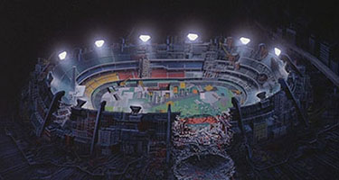, refers to the militaristic disappointment which has been left behind in the past.
19. Bolton, Christopher (2014) "From Ground Zero to Degree Zero Akira from Origin to Oblivion" Mechademia 9 (p. 295-315)19 In the narrative Akira is uphold as a god, this makes him symbolic of Japan’s old power and downfall. Tetsuo on the other hand is the unwieldy force to be reckoned with and causes real chaos in Neo-Tokyo, instead of Akira. Arguably this could refer to the catastrophe disengaged future generation of Japan. Tetsuo doesn’t stand for this whole post-war generation but rather a ‘what if situation’. The post-war generation of the mid 70’s is only familiar with a stable economy and peace, and could be potential have the inability to address this new found power. We call this specific group of stability the ‘Shinjinrui’. As Susan Napier mentions in Panic Sites: ”…terrifying and yet pathetic, an adolescent unable to cope with the new powers suddenly thrust upon him.”20. Napier, Susan (1993) "Panic Sites The Japanese Imagination of Disaster from Godzilla to Akira " Journal of Japanese Studies 19 (p.
327-351)20 As mentioned before, because of the lacking parental figure, this is why this generation cannot fully understand the responsibility entrusted in them. In the narrative Tetsuo and Kaneda are supposedly orphans, hence we are not introduced to any parental views.21. Fuller, Frank (2015) The deep influence of the A-bomb on anime and manga.21
In the end Tetsuo merges with Akira(fig. 7)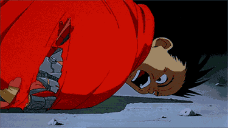. Which would symbolises the merge between old and new. This is a reflection on Japan’s own text-modern society because Akira emerged in the age of fiction. A time when people escaped from reality looking for answers in fictional environments. The transition from reality to a fictional narrative is made visible throughout Akira and has developed into a critical piece of reflective escapism. In the meantime it also functions on a educational field, where history is retold to shape the future into avoiding past mistakes.
Yet is it possible that the manga and anime narrative could teach us something? I, myself don’t have any relations to Japan or its culture. It is even something quite abstract and alien, and this counts for many other viewers. Nevertheless the fictional ideology, culture and sociology transcends nurture and adds new perspectives. This is also common in the tradition of story telling. In Marina Warners22. A British novelist, short story writer, historian and mythographer. She is known for her many non-fiction books relating to feminism and myth. She has written for many publications, including The London Review of Books, the New Statesman, Sunday Times, The Telegraph and Vogue. She has been a visiting professor, given lectures and taught on the faculties of many universities.22 book From the beast to the blonde she researched the purpose of fairytales and about their tellers. Warner’s goal is to see exactly what it is so intriguing about these tales, yet at the same time blend into the ordinary, which tells us so much about what it means to be a human being. Notably a human being in the midst of society. In a sense, as Warner clearly shows, fairy tales are less about fantastic visions or magical realms than about human psychology and social organisation. The beast and the blonde does not reside in fictional macrocosms, instead they are here in the everyday world and with us at all times. Hypothetically they’re stories about us. Warner explains that our tradition of story telling originated from the female parental figure because of the domestic setting. Mother mostly being at home with the children and therefore having more converse with the children than the father. The maternal voice is an ‘acoustic mirror’, which acts to reflect and mould the child’s developing identity.23. Warner, Marina (1996) From the Beast to the Blonde On Fairy Tales and Their Tellers. (p.190, p.407)23
The identity we posses is constructed on how we imitate certain characteristics from a point of reference accordingly to Sigmund Freud Austrian neurologist and the founder of psychoanalysis. Freud says that this essentially is the person’s parental figures. This shifts eventually through socialisation or the observation of other individuals. A discourse isn’t necessary to construct identity as it is about ‘recording’ information. Through a traumatic observation, it is likewise possible to inherit characteristics that influence identity in the long run. Accordingly to Freud the identity is constructed out of three facets; id, ego and superego. The id is your biological system, the daily response you have on the environment. Then the ego executes the observations of the id into actions. Lastly the superego is what you as individual consider as ideal image based on the id and the ego, so not real. Trauma afflicts the superego because it involves points of reference outside its own framework.24. Tilak, Shantanu (2015) Elements of Personality Psychology.24
As explained in my previous chapter, Japan struggles with the absence of parental figures since the end of the Second World War. The Japanese father is out to earn money, in the context of rebuilding Japan. In the manga and anime narratives, this type of family structure is often present. Children go out during the day and constructing their own course through life, hence their own reference. But in the evening when the father comes home, the character identity of the children often changes into something else. As visual example, in Serial Experiment Lain25. Avant-garde anime series directed by Ryūtarō Nakamura, with character design by Yoshitoshi ABe, screenplay written by Chiaki J. Konaka, and produced by Yasuyuki Ueda for Triangle Staff. It was broadcast on TV Tokyo from July to September 1998. The series is influenced by themes such as reality, identity, and communication, and it demonstrates them by using philosophy, computer history, cyberpunk literature, and conspiracy theory.25, when Lain’s father comes home she is always wearing a bear suit which stands in sharp contrast to her life on the web and nightlife (fig. 8 & 9)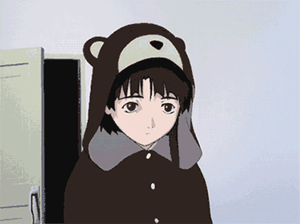
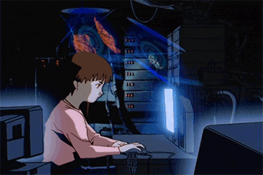. The father is a stranger to the post-war generation and for that reason has little or nothing to contribute to the Japanese identity. Japan’s parental defect caused a gap in the ‘acoustic mirror’. Meanwhile Japanese children have longer hours at school than in most countries. Thus the mother figure is also presented minimal. This parental gap is larger than regular and would be replaced in by socialisation and observation as mentioned before. However Japan is dealing with a large amount of NEETs and freeters. NEET is short for ‘Not in Education, Employment or Training’ and is used to describe people, between 18 and 40 years, who are lazy/do not want to work. It was first mentioned in Japan in 2003 by the social psychologists and quickly spread with the release of the books written about NEETs by the pioneers in this aspect, such as Genda or Maganuma. Freeters adversely is an abbreviation of the words ‘free’ in English and ‘Arbeiter’ in German. They’re jobless people who are looking for a job but haven’t found one. These two groups of unemployed stay at home most of the time, disengaging themselves from society. It is related to a movement called the ‘hikikomori’; students socially withdraw themselves due to the disappointment of society and social pressure. The Japanese Ministry of Health, Labour, and Welfare defines hikikomori as people who refuse to leave their house and thus isolate themselves from society in their homes for a period exceeding six months. The psychiatrist Tamaki Saitō defines hikikomori as "a state that has become a problem by the late twenties, that involves cooping oneself up in one's own home and not participating in society for six months or longer, but that does not seem to have another psychological problem as its principal source".26. Kremer, William and Claudia Hammond (2013) Hikikomori Why are so many Japanese men refusing to leave their rooms.26 When this socialising doesn’t occur, identification is acquired through observance. Examples of this are books, television or gaming. They do not require any human intervention and also function as narrator of stories. Because of this, the individual’s point of reference and imitation could be build upon a fictional reality.
In the anime Jin-Roh27. Jin-Roh, also known as Jin-Roh: The Wolf Brigade in its American release, is a 1999 Japanese animated feature film directed by Hiroyuki Okiura. The film is the third adaptation of Mamoru Oshii's Kerberos saga manga, Kerberos Panzer Cop, after the two live-action films: The Red Spectacles and StrayDog: Kerberos Panzer Cops released in 1987 and 1991 in Japanese theaters.27, Mamuro Oshii
28. Japanese filmmaker, television director, and writer. Famous for his philosophy-oriented storytelling.28 taken one of the most iconic tales of the brothers Grimm, Little Red Riding Hood, to tell the tale of post-war Japan in a scenario where the Germany has won the Second World War. This suggests that there wouldn’t be any national trauma in Japan, as there is in Akira. Jin-Roh is again a form of escapism –but without an apocalyptic discontinuity. Because of the absence of Japan’s national trauma, the story isn’t directed to Japan as an audience. It means that the audience is meant for a international audience. Which makes it the reason for Oshii to have chosen a globally known fairytale. In the story of Little Red Riding Hood, a girl visits her ill grandmother and meets a wolf in the forest which tricks the girl in order to eat her and the grandmother. The wolf is the villain and the huntsman –who kills the wolf– the hero.
Jin-Roh starts us through the eyes of the resistance party. The resistance activates women and minors to distribute bombs during planned riots which the opposition call Red Riding Hoods. They also use elements of the Little Red Riding Hood story in their code language. Guerrilla warfare often uses children and woman to distribute weapons, as they are an unlikely target. This normally ends fatally as opposition would be forced to eliminate feeble individuals. This also happens in Jin-Roh, when one of the minor carriers is cornered in the sewers and detonates a bomb. The soldier, Kazuki Fuse, who had a clear shot on her was hesitant to shoot. Later he meets the suicide carrier’s sister, Kei. In conclusion to the incident he realises that as soldier he cannot maintain any morality and that he basically is a tool to the government. They talk about the soldiers as beasts, choosing to fight means that there is no room for good or right. The grand narrative is constructed on polarisation within warfare. Bad and good is purely a point of perspective and based on personal ideology. This is also the reason that formally we don’t address parties as the villain or the hero in most fairytales, but opposition versus resistance. In the narrative Fuse is the wolf and Kei is Red Riding Hood, the victim. The role of the wolf is made clear visually when Fuse stands in front of taxidermy wolves in the museum of natural history (fig.10)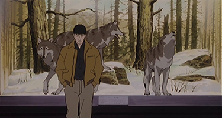 to meet an acquaintance from counter intelligence. Later in the anime, the scene is re-used but then having Kei standing in front of the taxidermy wolves (fig.11)
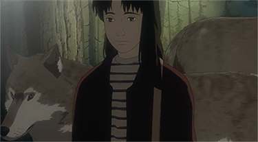. She is luring Fuse into a trap, thus the role of the wolf changes. A similar example is in the scene where the elite soldiers are doing an clearance exercise, while a part of Little Red Riding Hood is narrated. This happens synchronised with the movements and actions of the soldiers. However they act from the perspective of Red Riding Hood and not the wolf. This exchange of the wolf role happens continuously throughout the anime. The moral of Jin-Roh is that the wolf is interchangeable, even though our conception of good and bad is pretty much cultural and social defined.29. Greenhill, Pauline and Steven Kohm (2012) "Hoodwinked and Jin-Roh The Wolf Brigade" Marvels and Tales 27.29 We’ve been brought up with the idea that the wolf is bad and always will be. But in warfare it’s sometimes not that black and white. Both parties are neither bad or good, because it is purely subjective. This idea also applies to Japan’s post-war mentality. Morality in stories shows the concerns and issues of an society.
Fairytales have the origin to develop identity in a playful way. The parental figure is the propagator of the stories and ‘acoustic mirror’. Eventually this will shift to new points reference, like friends. However due to the lack of the parental figures and socialisation, it is more likely that individuals will be influenced by sources disconnected from human intervention: fictional narratives. The point of reference shifts and mannerisms from this source will be adapted into reality.
Who are these people that construct their identity from manga and anime? The word otaku is often used as a pronoun. It describes the person with a serious obsession for a certain subject. Someone can be a game otaku or an idol otaku, however it is mainly used in in the manga and anime vocabulary. The word otaku was invented by the writer Akio Nakamori, and is an abbreviation of the word for home in Japanese, ‘Jitaku’. This is because it is common for the otaku practice their passion primarily at home since specific obsessions are seen as a taboo. It gives the otaku the stigma of an hermit and for that reason unattractive to be addressed as one. Despite the stigma, some people do actively present themselves as an obsessive fan. Yet always behind a some sort of disguise. For example at annual anime conventions, the participants come dressed as their favourite character. This is called cosplay (fig. 12)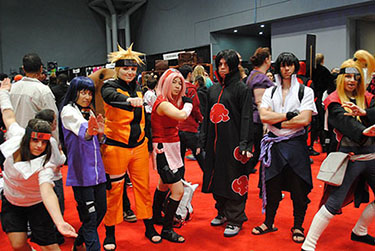 which is short for ‘costume play’. Wearing costumes in public is seldom socially accepted and for this reason, the participants ‘go all out’ when it comes to appearance. Like-minded meet each other there to discuss, buy merchandise and exchange contact. So as result it is also common that outside bigger events, smaller local gatherings are organised. In other cases these gained contacts are also treated as pen palls. This obsessive form of adoration started around the 80’s, the start of the economic boom for Japan since a period of rebuilding the country. In the process of making Japan great again, the overall feeling among the people was collectivism. They suffered together and would rebuild together. Now the country is an economic power –and the war generation is thinning out– collectivism isn’t applicable anymore. Today, Japanese youth is driven by individualism. The first reason for individualism is economic prosperity and lastly because the lack of communication. Counter movement Tokyo Gagaga(fig. 13)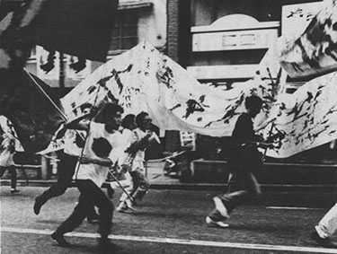 seeks to bring about a revolution through imagination. The theatre/activism group boldly parade through the streets of Tokyo with a somewhat odd appearance, shouting multiple slogans concerning our disinterest in each other. The citizens of tokyo are dazed by their duties and they must be awoken to see how unnatural it is. More than half of Japan its the population lives in large cities. They work long days and travel too long in relation to distance. The citizens have in common that they share a city, but even though with this common ground it doesn't induce communication even through intensive encounters on work and public transport. Thus the individualism in Japan.30. Otaku. Jean-Jacques Beineix France 2 Cinéma 199430
As result of the withdrawing attitude, the otaku may long for a form of recognition and exchange. As described in the Maslow pyramid of needs; after establishment of basic needs as food, shelter and security, it is a natural reaction to obtain relationships with other people in order to achieve self-fulfilment.31. McLeod, Saul (2007) Maslow’s Hierarchy of Needs. Published at simplypsychology.org accessed 06/12/1631 This is at the same time a form of giving the obsession a rightful place in life. In this state the otaku adopts a moderate form of his or her practice. This semi-otaku is a valuable asset to the manga and anime culture, as they exchange their gained information. The discourse with other ‘experts’ allows them to reflect and experience new perspective that allows them achieve self-realisation. Risaku Kiritoshi is a moderate otaku. His interest lies with ‘the Japanese monster’, such as Godzilla.32. A fictional giant monster originating from a series of tokusatsu films of the same name from Japan. It first appeared in Ishirō Honda's 1954 film Godzilla. Since then, Godzilla has gone on to become a worldwide pop culture icon, appearing in numerous media including video games, novels, comic books, television shows, 29 films produced by Toho and two Hollywood films.32 During his study he used the monsters as a release for stress, because for him the monsters represent an power that exceeds man. This gives him comfort. Understanding why he admires and needs this imaginary outlet, gives him the perspective to interpret what he doesn’t like about his real life. By awareness of the situation through fictional escapism, the analysis can be used as a reflective tool too evolve society. In Re:Zero and Foregrounding the Symbolic Order by Pause and Select, the analysts propose that sekaikei fiction is about the conceptualisation of the self. Thus meant for an audience that can’t register a place. Sekaikei doesn’t have a clear definition however does have some characteristics. Firstly there is always a female heroine that fights. A male is the main character but relies on the female heroine. They both have a close relation with each other and without the narrative or this relation there wouldn’t be any purpose for a grand narrative. Because of this, a society or a middle ground barely present. Sekaikei’s narrative structure starts with the protagonist placed in a collective to in the end a individual and lonely state of being. Which is familiar of the phenomena hikikomori. Pause and Select believes that by analysing the anime Re:Zero –which in their opinion is an encapsulation of Japans withdrawal– we would could better understand these social issues and develop better ‘ailments’.
Thus how does this tool translate into the physical world. The case study on Japanese religion by Dr. Thomas looks into the adaptation of religious behaviour of manga and anime readers and viewers. The religious institutes in Japan count more followers than the population indicates. The practice is present but religious faith isn’t, this makes the source of the act disconnected to the initial religious institutes. Dr. Thomas calls this a religious frame of mind, abstracted from the frames of a manga. The manga shows in a framed format the linearity of a narrative, so the viewer has to fill in the gaps between the frames to have the story make sense. With the religious frame of mind this happens however this filling in happens in reality instead of the imaginary, constructing a new form of religious behaviour.33. Thomas, Jolson Baraka (2012) Drawing on Tradition Manga Anime and Religion in Contemporary Japan. Hawaii (p.153-187)33 A famous example of this are the pilgrimages to Washinomiya shrine, one of the oldest Shintō shrines in the Kantō region, located in Kuki, Saitama Japan. The shrine appears for four seconds in opening of the popular manga and anime, Lucky Star34. Lucky Star manga started serialization in Kadokawa Shoten's magazine Comptiq's January 2004 issue sold on December 10, 2003. The Lucky Star anime, produced by Kyoto Animation, aired between April 8, 2007, and September 16, 2007, containing twenty-four episodes. The setting is mainly based on the city of Kasukabe in Saitama Prefecture.34(fig. 14)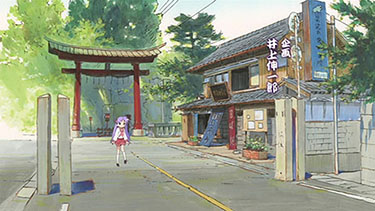. Many (moderate) otakus travel to the shrine and even make donations. The initial purpose of visiting isn’t religious in any way, but still is an interaction with an religious institute. The case study given is based on a religious interpretation; yet also applies to other behaviour like fashion, activities and even culinary experiences. Therefore the term religious frame should be modified to a broader scope of influence: a sociological imaginative frame of mind.35. Mills, C Wright (1959) The sociological imagination New York35 These (semi-)otakus can propose us to a critical view of our society, political structures and even ethical dilemmas. One can argue that these people are biased by their one-sided interest. But I’d like to think otherwise, since their frame of mind is based on perspectives from different angles. The contrast in narratives between different manga and anime ask for a flexible understanding of certain situations. The otaku has to be more considerate of his ideas due to the multiplicity of his perspectives. Hence making the otaku an impartial critical analyst.
I would like to briefly highlight the negative side of the otaku in practice, as it is a tedious matter. The fictional has little or no supervision from a external party. When reality and fiction meet these can conflict with each other, through reinterpreting and then placing it in the wrong context. The two cases illustrate the danger of fiction in reality. Hentai refers to the genre for erotic manga and anime (fig.15)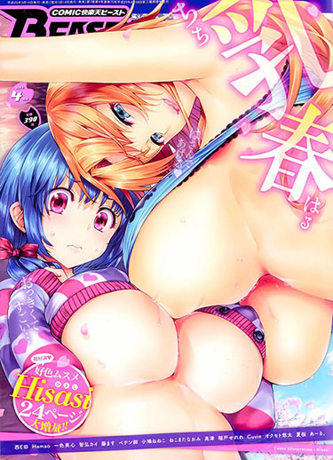. With an average of more than five hundred million hits on google per month –and with the highest density of traffic in the Netherlands– its popularity is immense. Yet this category is totally excluded from manga and anime literature. Hentai is seen sexually violent by subjects as gang bangs and raping but also through the portrayal of girls in erotic positions.36. Booc, Dave Gerald. A Short History of ‘Hentai’.36 The visual style leans towards showing youthful females, younger looking than they’re supposed to be. In the state of Iowa a man was sentenced to six months in prison because of the possession of illustrations of child sex and bestiality. The 40-year-old was charged under the 2003 Protect Act, which outlaws cartoons, drawings, sculptures or paintings depicting minors engaging in sexually explicit conduct, and which lack “serious literary, artistic, political, or scientific value”.37. Kravets, David (2010) ’Obscene’ U.S. Manga Collector Jailed 6 Months.37 The court treated the case the same as the possession of child porn, hence rejecting the notion of fiction. Nowadays in many countries, owning this material could lead to a maximum of fifteen years in prison. In July 2016 American software development company Niantic developed an location-based augmented reality game for the smartphone: Pokémon-Go. The game is adapted from the popular 90’s television series Pokémon (fig.16)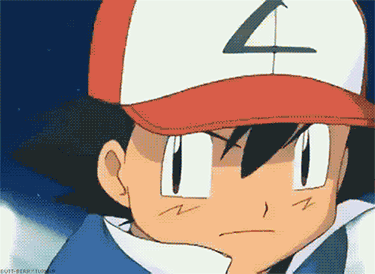 created by Satoshi Tajiri in 1995. The story is centred around fictional creatures called ‘Pokémon’, the name is an abstraction of the name ‘pocket’ and ‘monster’. Individuals, known as poké-trainers, catch and train to battle each other for sport. The series deeper subjects are wanderlust and meeting people that have similar interests. The protagonist, Ash Ketchum, tries to catch pokémons in specially designed balls and by fighting other ‘poké-trainers' he wants become ultimate ‘poké-master’. The rules are quite straightforward, in Pokémon-Go a person has to walk a certain distance to find an augmented pokémon, which can be caught and trained by fighting others. There is a list with all the pokemons that are able to be collected and by doing so it makes you a poké-master. With the release of this game, masses of people between sixteen and forty years old, went outside looking for pokémon. Some out of nostalgia and other out of pure fandom. Soon, some of the players found driving a more effective way to increase the catch radius. Through the increase of driving and gaming simultaneously, led to more than one hundred thousand of car accidents in the United States alone, ten days after its release. The craze went on to people falling of cliffs, to armed ‘poké-robberies’. Some institutions have requested Niantic to stop spawning pokémons in certain areas as it would result in distracting situations, contamination and the violation of privacy.38. Lee, Bruce Y. (2016) Hospitals Say, 'Pokémon GO Away’.38 Though the multiple issues surrounding the game, it is still allowed to be played. However for instance Saudi Arabia has altered the fatwa39. A legal opinion or decree handed down by an Islamic religious leader.39 to ban Pokémon-Go because of the apparent use of impious symbols. How to deal with the jurisdiction of fiction in reality, it is an thesis on its own. It’s arguable that the original source didn’t had any dishonest intent. Yet, who is wrong and who has responsibility. Niantic has the responsibility of distributing the game, but it is the player that creates problematic situations. Niantic has responded to the complaints of the institutions, thus in this case responsibility lies with the players. Per contra hentai being placed in the context of child porn, introduces more ambiguous elements to take in consideration. Does the delinquent have a history of the abuse of minors and what is the extent of this?Furthermore, is an illustration the same as a photo and when does it stop being a form of art?
I’ve only scratched the surface: the manga and anime spectrum is extremely broad. There are endless examples of narratives where history is being retold, the future is being anticipated or ethics are being reshaped. Story elements are interwoven with pure fiction in which we can identify ourselves. The manga and anime form can be described as a bouquet of flowers. Most of the flowers are made of plastic, however there are also real ones. The fake and the real are so similar that one can only find them both beautiful. The imagination has the power to exceed reality through ‘reflective escapism’. It seems that in this time and place everything is possible, we shouldn’t exclude the speculative. Through the construction of multiple perspectives, in theory we could be less likely to be biased. In making considerate ideas and choices in daily life as well in our professional life. Manga and anime are a form of leisure; partially an escape from study or work. Instead of functioning independent of each other I propose that fiction and work are seen as a team. It would operate as an educational facet. Because the narratives are constructed from a certain culture, disciplines within the political field would benefit from the reflexivity of manga and anime. It is all still hypothetical, also because most of the stories are focused on some typical Japanese phenomena. Ideally the production of these manga and anime would happen with writers from different countries. The Red Turtle40. A story about a man who becomes shipwrecked on a deserted island and meets a giant red turtle. The film has no dialogue. It premiered in the Un Certain Regard section at the 2016 Cannes Film Festival.40 is taking the right step into this direction. The story is written by Dutch director Michaël Dudok de Wit and French director-scriptwriter Pascale Ferran and animated by Hayao Miyazaki’s Studio Ghibli. Ghibli is a Japanese animation film studio based in Koganei, Tokyo, Japan. The studio is best known for its anime feature films, and has also produced several short films, television commercials, and one television film. Miyazaki approached Dudok de Wit for his view on loss and death in Father and Daughter41. A 2000 Dutch animated short film, made by Michaël Dudok de Wit. It won the Academy Award for Best Animated Short Film in 2001. A father says goodbye to his young daughter and leaves. As the wide Dutch landscapes live through their seasons so the girl lives through hers. She becomes a young woman, has a family and in time she becomes old, yet within her there is always a deep longing for her father. At the end of the film, in what appears to be a dream sequence, or perhaps the afterlife, they are reunited.41 This contact resulted is the first non-Japanese film, produced by Studio Ghibli with a relatively successful rating since it opened. Exchange in thoughts about certain novels, series and movies, is a vital element to make the the critical format of manga and anime to work on a broader scale. As suggested before, the real ‘otaku’ is obsolete since there is no social network, therefore we rely on the ‘semi-otaku’ to educate us with their sociological imaginative frame of mind. They are the bridge to this reflective tool and our sparring partners on the issues discussed. But before this will unfold, the ‘semi-otaku’ will need to take on an active role in exciting a broader audience then the selected group of manga and anime fanatics. After all the volumes and movies are, still at this moment, easily accessible and free. The platform in which they presents themselves is informal and has less of a threshold than for instance a museum. The critical mangaka have taken over the role of the female storyteller. They’ve created characters whom we can relate to and be inspired by. Though on first sight the aesthetics seem to be meant for a young audience the narrative on the other hand is written by and for adults. The narrative is meant to be relatable, same as the hero whom we identify with. Analysing manga and anime can reformulate the frame of mind, enriching one’s perspective.
(2002) Modules on Jameson Post-modernism. Published at cla.purdue.edu accessed 1/10 2016
(2009) Percentage of global population living in cities by continent. Published at thegaurdian.com accessed 05/12/16
(2015) NEETs in Japan What Does It Mean. Published at jpninfo.com accessed 01/11/16
(2015) Sion Sono exhibition showcases Tokyo Gagaga 1990’s street performance art. Published at throwoutyourbooks.wordpress.com accessed 06/12/16
Anime Manga and Religiosity in Japan, Dr Baraka Thomas, Pause and Select youtube 2016
Bolton, Christopher (2014) "From Ground Zero to Degree Zero Akira from Origin to Oblivion" Mechademia 9 (p. 295-315)
Booc, Dave Gerald. A Short History of ‘Hentai’. Published at academia.edu accessed 11/12/16
Brienza, Casey (2015) Global manga Japanese comics without Japan. Aldershot Hamps
Brown, Steven (2010) Tokyo Cyberpunk Posthumanism in Japanese Visual Culture. New York
Dewey, John (1910) How we think. Boston
Frank, W. Ewell (2005) C Wright Mills on the Sociological Imagination. Published at faculty.rsu.edu accessed 06/12/16
Freigburg, Freda (1996) “Akira and the Postnuclear Sublime” Hibakusha Cinema. New York (p.91-102)
Fuller, Frank (2015) The deep influence of the A-bomb on anime and manga. Published at theconversation.com accessed 25/09/2016
Greenhill, Pauline and Steven Kohm (2012) "Hoodwinked and Jin-Roh The Wolf Brigade" Marvels and Tales 27.
Johnson, Chalmers (1995) The 1955 System and the American Connection A Bibliographic Introduction. Published at jpri.org accessed 18/11/16
Kern, Adam L. (2006) Manga from the floating world Comic book culture and the Kibyoshi of Edo Japan. Cambridge MA
Koichi, Yumoto (2013) Yokai museum the art of Japanese supernatural beings from Yumoto Koichi collection. Tokyo Japan
Kravets, David (2010) ’Obscene’ U.S. Manga Collector Jailed 6 Months. Published at wired.com accessed 11/12/16
Kremer, William and Claudia Hammond (2013) Hikikomori Why are so many Japanese men refusing to leave their rooms. Published at bbc.com accessed 01/11/16
Laging, Rik (2014) ROOD GEEL BLAUW. Haarlem
Lee, Bruce Y. (2016) Hospitals Say, 'Pokémon GO Away’. Published at forbes.com accessed 11/12/16
McLeod, Saul (2007) Maslow’s Hierarchy of Needs. Published at simplypsychology.org accessed 06/12/16
Mills, C Wright (1959) The sociological imagination New York
Nakamura, Ryūtarō (1998) Serial Experiment Lain Japan
Napier, Susan (1993) "Panic Sites The Japanese Imagination of Disaster from Godzilla to Akira " Journal of Japanese Studies 19 (p. 327-351)
Napier, Susan (2005) Anime from Akira to Howl's Moving Castle New York
Oshii, Mamoru (1999) Jin-Roh The Wolf Brigade Japan
Otaku. Jean-Jacques Beineix France 2 Cinéma 1994
Paik, Peter (2015) Review The Freshness of Ruins Science Fiction Studies 42 (p. 601-604)
Re:Zero and Foregrounding the Symbolic Order, Pause and Select, Pause and Select youtube 2016
Samuels, Richard (2001) Kishi and Corruption An Anatomy of the 1955 System. Published at jpri.org accessed 18/11/16
Shapiro, Jerome (2002) Atomic Bomb Cinema The apocalyptic Imagination on film. New York
Shoji, Kaori (2015) Where did all the Japanese fathers go. Published at japantimes.co.jp accessed 14/11/16
Standish, Isolde (1998) The Worlds of Japanese Popular Culture. New York
Tanaka, Motoko (2011) Apocalypticism in Postwar Japanese Fiction. University of British Columbia
Tanaka, Motoko (2014) Apocalypse in Contemporary Japanese Science Fiction New York (p. 190)
Thomas, Jolson Baraka (2012) Drawing on Tradition Manga Anime and Religion in Contemporary Japan. Hawaii
Tilak, Shantanu (2015) Elements of Personality Psychology. Published at academia.edu accessed 08/12/16
Verberk, Bas J. M. (2013) The world of manga. Rotterdam
Warner, Marina (1996) From the Beast to the Blonde On Fairy Tales and Their Tellers. New York (p. 190-191)